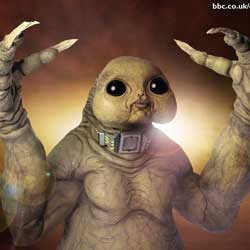

| Home The Doctors The Companions The Villains Show History |
SlitheenThe Slitheen are a family of massive, bipedal extraterrestrials from the British science fiction television series Doctor Who and are adversaries of the Ninth Doctor and later Sarah Jane Smith. The Slitheen are of the egg laying calcium-based Raxacoricofallapatorian race native to Raxacoricofallapatorius, though many use "Slitheen" in referring to the race in general. Instinctive hunters trained to kill at a young age, Slitheen are a ruthless criminal sect whose main motivation is profit. They are also convicted on their homeworld, unable to return to their planet due to a death penalty. The Slitheen first appeared in the 2005 series episodes "Aliens of London" and "World War Three", and subsequently recur in later episodes of both Doctor Who and spin-off series The Sarah Jane Adventures. |
|
Katie Hyche |
Ann Marie Skjold |
Content derived from the Doctor Who Wikipedia Page. |